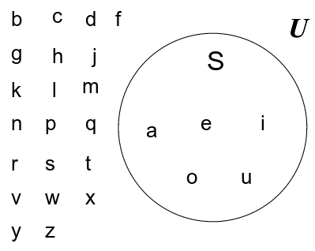

Представляет
множества
графически
-Окно представляет собой универсальное
множество
-Круги представляют
множество
Рассмотрим множество S, которое является множеством всех гласных алфавита
Отдельные
элементы
как правило, не пишутся
в диаграмме Венна*
